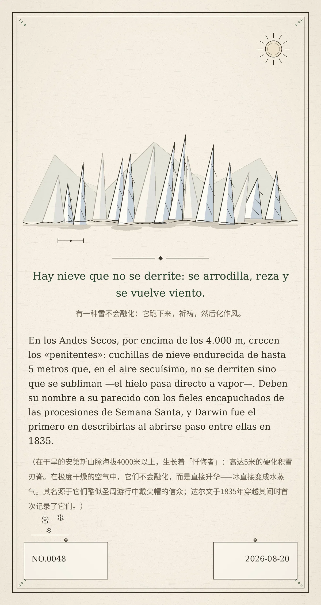

Hay nieve que no se derrite: se arrodilla, reza y se vuelve viento.
En los Andes Secos, por encima de los 4.000 m, crecen los «penitentes»: cuchillas de nieve endurecida de hasta 5 metros que, en el aire secuísimo, no se derriten sino que se subliman —el hielo pasa directo a vapor—. Deben su nombre a su parecido con los fieles encapuchados de las procesiones de Semana Santa, y Darwin fue el primero en describirlas al abrirse paso entre ellas en 1835.（在干旱的安第斯山脉海拔4000米以上，生长着「忏悔者」：高达5米的硬化积雪刃脊。在极度干燥的空气中，它们不会融化，而是直接升华——冰直接变成水蒸气。其名源于它们酷似圣周游行中戴尖帽的信众；达尔文于1835年穿越其间时首次记录了它们。）